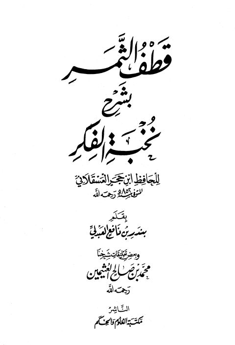

Downloads need an internet connection.
قطف الثمر بشرح نخبة الفكر للحافظ ابن حجر العسقلاني
Authors: محمد بن صالح العثيمين بندر بن نافع العبدلي
Publishers: مكتبة العلوم والحكم
**▫️ العنوان: قطف الثمر بشرح نخبة الفكر للحافظ ابن حجر العسقلاني** ▪️ المؤلف: #بندر_بن_نافع_العبدلي • #محمد_بن_صالح_العثيمين ▫️ الناشر: #مكتبة_العلوم_والحكم ▪️ تاريخ النشر: 1431هـ 2010م ▫️ بلد النشر: المدينة المنورة، #السعودية ▪️ الطبعة: 1 ▫️ عدد الأجزاء: 1 ▪️ الصفحات: 224 ▫️ نوع الوعاء: #كتاب ▪️ التصنيف الرئيسي: #الحديث_وعلومه ۪